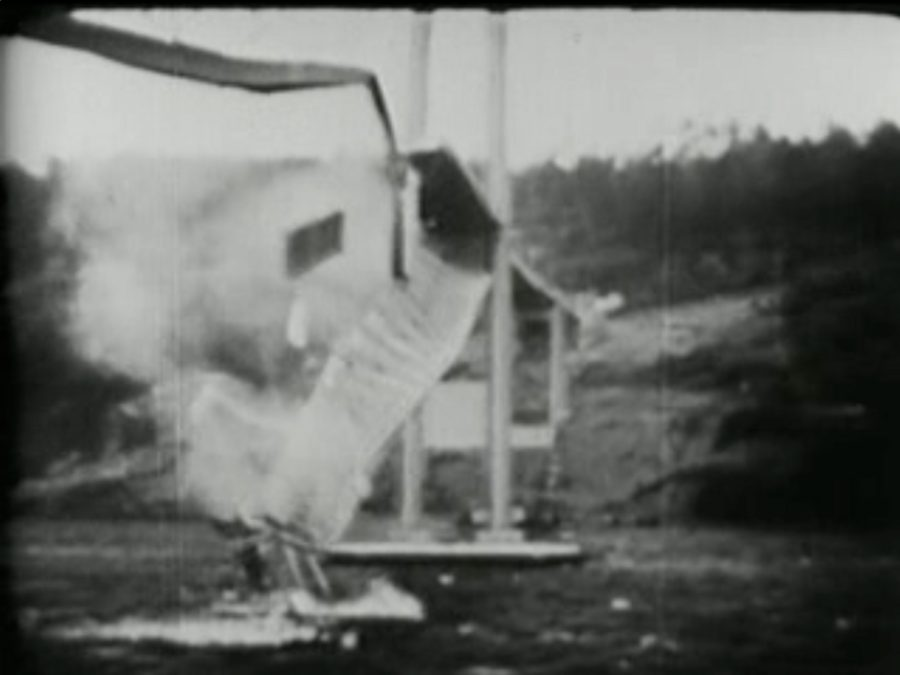
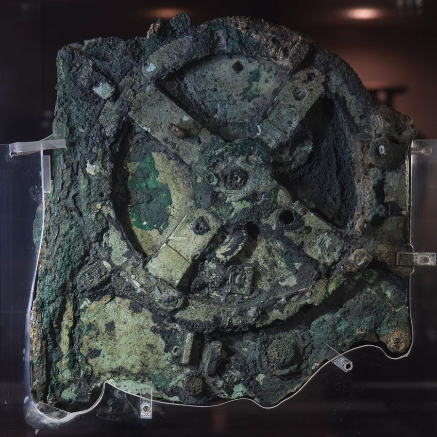
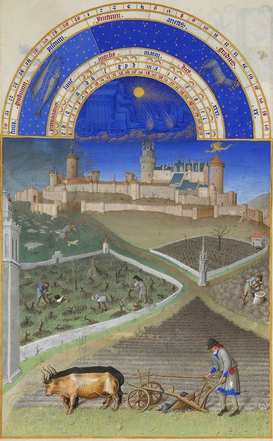
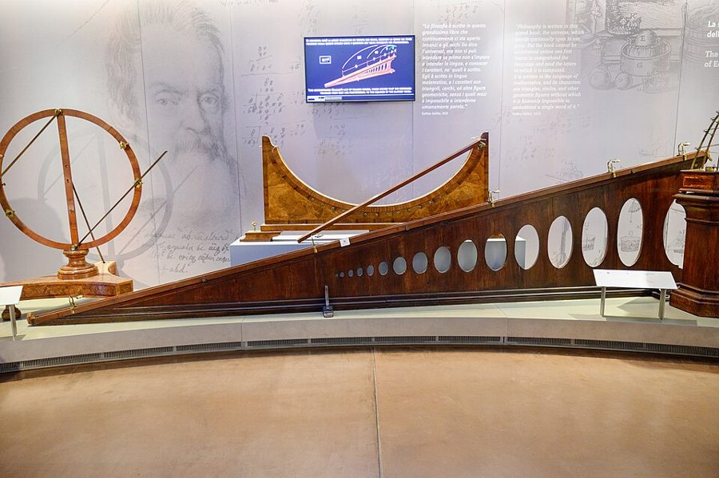
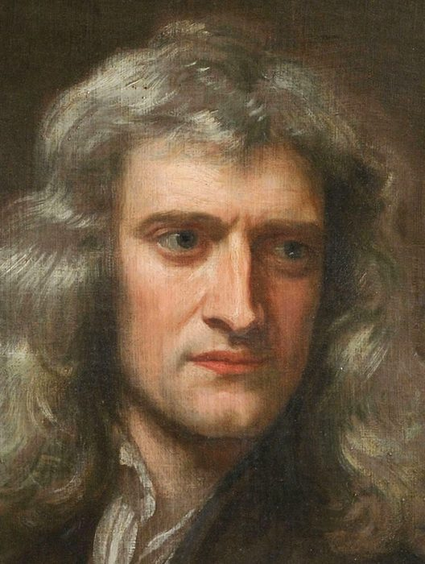

sweet spot
… finds the sweet spot on the bat.
（球棒上的）甜区，打在那里最舒服
今天常引申为「最佳点、恰到好处的区间」，比如 the sweet spot between price and quality。
第 2 章是作者五个「时代」里的第一个：重力的时代。开头一小段是物理，后面大半是一条从史前到牛顿的时间线。开头最好读：推秋千要掐准时机，顺着秋千自己的节奏推，一点力气就能越荡越高，这是共振；同样的事落到桥上就成了祸害。接着他把日常的「干活」换成物理的「功」。中间的历史可以挑着读，要紧的在 §9：希腊人只许长度比长度，「速度」连一个量都算不上，直到 14 世纪有人拿距离去比时间，伽利略和牛顿才接得上。§10 是作者自己对科学和工程关系的三点判断。
第 1 章讲工程是什么：把想法变成现实，靠的不只是科学。那里作者借哲学家 Carl Mitcham 的说法，把技术看成物件、知识、活动和人的意志四样；这一章里斜体的 need、activity、objects、knowledge 就是这套标签，他拿来讲每一步是什么需要推着走的。从这一章起，后五章各讲一个「时代」，按人怎样借重力、热、电磁、信息、系统来做功排下去，这一章讲最老的一种。
别被带歪：§1 把秋千、球杆、球棒的甜区、歌剧演员、长笛、收音机都归到「时机」和共振。秋千、长笛、调收音机是正宗的共振；球棒的甜区今天的解释是打在那里手上震得最轻，歌唱的「头腔、胸腔共鸣」多半是唱的人的感觉。当成好读的引子，别当成同一种机制。
希腊人会量金字塔有多高，为什么说不出一样东西「每秒走几米」？
读的时候带着这几个问题，读完回来对照「检查一下理解」。
原书这一章没有小标题，一口气写下来。下面的节是本站按段落分的：粗体是本站起的节名，后面是档和英文词数；再下面是这一节开头的几个英文词，在 Kindle 里搜它就能跳过去。读完打个勾。
先把这一页用到的几个概念用书外的例子讲一遍。作者拿它们推出什么，读原书时自己看。后面各页用到时会链回这里。
把秋千拉开一点再放手，它会按自己的节奏来回摆，不用人管：链长 2 米的秋千，一个来回约 2.8 秒。每秒来回几次叫固有频率，来回一次要几秒叫固有周期。它只看秋千自己：链子越长摆得越慢，和座位上坐的是谁关系不大。
外力按这个节奏一下下地推，每一下都赶在秋千往前走的时候，能量一次次叠上去，摆幅越来越大，这叫共振。推得勤了或慢了，总有几下推在它迎面回来的时候，等于踩刹车。吉他的弦、长笛管里的空气、收音机里的调谐电路都是这个道理。反过来，楼和桥也有固有频率，人群的步子或风的节奏贴上去就危险，得靠阻尼（把振动的能量消耗掉的东西）压住。
在这一页：§1 的一串例子都靠它。第 4 章调收音机、电路里的振荡还会回到这里。
物理里的功只认一件事：力推着东西，沿力的方向走了多远。功 = 力 × 距离，单位焦耳。把 1 千克的东西提高 2 米，要用约 10 牛的力（1 千克在地面上重约 9.8 牛，书里取整成 10），走 2 米，做功 20 焦。提着购物袋在原地站十分钟，胳膊再酸，物理上的功也是零：袋子没动。
能量是做功的本事，单位也是焦耳：一块手机电池充满，存着约 5 万焦（15 瓦时上下）。功率是做功的快慢，焦耳每秒就是瓦：同样 20 焦，1 秒做完是 20 瓦，10 秒做完是 2 瓦。电费单上的「度」是千瓦时，说的是能量，不是功率。英语日常把 weight（重量）当质量用，物理里它是力，单位是牛。
在这一页：§2 一段话里连着给出这三样。第 3 章讲热机、第 4 章讲电网都用这三个词。
这是作者从宗教史作家 Karen Armstrong 那里借来的一对词。mythos 是讲故事：用神话说明世界为什么是这样、人该怎么活，给的是意义，不求能检验。logos 是讲理：一步步推理、拿事实来对，求的是能拿来办事的答案。作者说两样从希腊人起慢慢分开，到牛顿也没分干净。
读的时候记住，这是他给历史搭的框架，不是史学界通行的分法。两个词在古希腊语里本来都可以指「说的话」，把它们对立起来是后来的读法。
在这一页：§3 把最早的神话叫 mythos，§5 把亚里士多德的理性叫 logos，§10 第一点收尾。书末 Glossary 有这两条。
绞盘是一根能转的鼓轮，绳子缠在上面拴着重物，鼓轮上伸出手柄。手推手柄转一圈，手走的圈比鼓轮收进的绳子长得多。手柄半径 0.5 米、鼓轮半径 0.1 米，手走 5 米，重物才上去 1 米；反过来，手只要出重物五分之一的力。输出的力和输入的力之比叫机械效益，这里是 5。
代价是距离：省了几倍力，就得多走几倍路。力乘距离两边一样，功一点没省，算上摩擦还要多做一点。杠杆、滑轮组、螺旋、楔子算的都是这笔账，扳手、千斤顶、自行车的低速挡也是。
在这一页：§4 用绞盘下定义；§6 阿基米德拉动国王的船，作者说他懂的就是这个。
希腊数学里，一个「量」只能来自两个同类的东西相比：这条线是那条线的 3 倍，这块地是那块的一半。距离和时间不是一类，拿米去比秒，在他们看来没有意义，所以速度连一个量都算不上，更别提速度的变化，也就是加速度。
14 世纪牛津的一批学者跨出了这一步，把距离比时间当成一个量来算。他们证明：从静止起匀加速的东西，一段时间里走的路，等于用它末速度的一半匀速走同样长的时间。巴黎的 Nicole Oresme 把它画成一张图：横轴时间，纵轴速度，走过的路就是图形的面积。三角形和半高的矩形面积相等，定理一眼可见。
在这一页：§9 的推理链从这里起步，§10 第三点再说一遍。原文没写「从静止开始」，这里补上。
先猜：链长 2 米的秋千自己摆一个来回约 2.8 秒。你每 2 秒推一次（更勤快），和跟着它每 2.8 秒推一次，每下一样用力，各推半分钟，哪个荡得高？高几倍？
一架秋千，一个只看表、不看秋千的推的人。调下面四样，图上是秋千半分钟里的摆角，往前为正、往后为负。打开页面时是「跟着秋千的节奏推」。
需要浏览器打开脚本才能运行。
各个控件：「多久推一下」是推的间隔，前两项会跟着链长自动换算成秋千自己的节奏，其余是固定的秒数；「每下推多猛」是每推一下给座位添多少速度，轻、中、重分别是每秒 0.15、0.3、0.5 米；「阻力」是空气和链子把振动慢慢耗掉的快慢，「装了阻尼器」是桥上那种专门吃掉振动的装置；「链长」决定秋千自己的节奏，统计栏第一格就是它。「最大摆角」看的是最后 10 秒，那时摆幅基本稳住了；「座位最高升起」是摆到最高时座位比最低点高多少。
这里的数都是本站定的演示值，书里没有算例。模型是一架单摆加上阻力，每推一下是一记瞬间的推，方向总是往前。真推秋千的人会看着秋千推，节奏自然跟得上；这里推的人只认表，好让你看清节奏差一点会怎样。塔科马大桥是颤振，不是这种共振，这个模拟器演示不了它，见「书里的人和项目」。
书里点名的人、发明和工程，挑读懂这一页用得上的讲。按在书里出现的顺序排，节号是你在书里哪一节遇到它。
作者举了两座桥。法国昂热的 Basse-Chaîne 吊桥 1850 年 4 月在一营士兵过桥时垮塌，书里写死了 220 人，常见的数字是 226 人。那天风雨很大，事后的调查还归咎于锚固处的钢索锈蚀，士兵的步子只是原因之一。
美国华盛顿州的塔科马海峡大桥 1940 年 7 月通车，桥面又窄又薄，风一吹就上下起伏，得了个外号 Galloping Gertie。同年 11 月 7 日，桥面在每小时六十多公里的风里大幅扭转，断了；没有人死，过程被拍成了影片。作者特意说，现在的风工程师不把它算成简单的共振，算成另一种相关的现象（见「今天怎么看」）。

1900 年，采海绵的潜水员在希腊安提基特拉岛附近发现了一艘古代沉船，捞上来的一团锈住的青铜块，后来才认出里面有三十多个精细的齿轮。转动手柄，表盘上能读出日月的位置和月相，还能预报日食月食，常被叫作最早的「模拟计算机」。残片今天藏在雅典国家考古博物馆。书里只用一句话带过，放在齿轮和螺旋这些机械的清单末尾，说它造于约公元前 100 年、可能在罗得岛；这两样后来都有新说法，见「今天怎么看」。

作者想替他翻一个案。人们记住的是科学家阿基米德：洗澡时喊「尤里卡」，浮力原理。书里引了普鲁塔克（1 世纪的希腊传记作家）的一大段话，说阿基米德瞧不起「工程这一行」，只爱纯粹的思辨。作者说这是普鲁塔克的看法，他是乡绅，不是工程师；还引古希腊科学史家 Geoffrey Lloyd 的话：可能是普鲁塔克编的。反例是复合滑轮：普鲁塔克自己记着，阿基米德一个人把坐满人的国王的船拉动了。作者说，不管他用的什么办法，他显然懂机械效益。
Vitruvius 是罗马的建筑师和工程师，《建筑十书》（De architectura）是古代留下来的唯一一部完整的建筑专著。作者把它比作早期的「工程师手册」：分建造、计时器、机械三部分，有滑轮、起重机、拖大石块的办法。书里引了一条柱子的规矩：上层的柱子比下层小四分之一，因为下层要多扛些，也像树一样下粗上细。这就是凭几何和经验定下来的经验法则。书里说它大概写于公元 1 世纪，通行的说法是公元前 1 世纪后期，献给奥古斯都。
作者列了一串中世纪的发明，分量最重的两样是重犁和马镫。北欧的土又湿又黏，南欧那种轻犁划不动；带轮子的重犁前面一把刀切开草皮，犁铧从底下削，犁壁把土翻过来，要八头牛拉。马镫让骑手在马背上坐得稳，能在马上作战。美国史学家 Lynn White 1962 年的书说，马镫推动了封建制的形成，书里引了他的话。这个说法从 1960 年代起就不断有史学家反驳，今天很少有人照原样接受。

英文的「工程师」来自拉丁文 ingenium（才智，也指巧妙的器械），中世纪拉丁文里造攻城器械（engine）的人叫 ingeniator。书里说 12 世纪英格兰的 Ailnoth（书里拼作 Ailnolth）是最早被这样称呼的人之一。到文艺复兴，达·芬奇给米兰公爵当「公爵的器械大师」，又给切萨雷·波吉亚当工程师兼建筑师。作者借佛罗伦萨科学史博物馆馆长 Paolo Galluzzi 的话说：在这以前，干技术活的人通常不留名，漂亮的房子造出来了，没人记下造它的人。
作者从他身上取两件事。一是斜面：让球从斜面滚下，用水钟计时，得出从静止起匀加速时，走过的路和时间的平方成正比。二是《两门新科学》（1638）：因为支持日心说受审之后，他转去研究杆和梁能扛多重。作者说他的答案重要但不对：他还没有弹性的概念，以为梁根部截面上处处受力一样，一直到断。不过截面的宽和高哪个更要紧，他的结论是对的：同一根木料，立着放比平着放结实。

三条运动定律加上万有引力，作者说从桥、楼到飞机、火箭，地球上的工程至今都建在这上面，除非哪天要造接近光速的东西（这个「除非」见「本站怎么看」）。书里还顺带列了他别的成就：反射望远镜，用棱镜把白光分成七彩，冷却定律，和莱布尼茨同时发明的微积分。

读英文原书时值得停一下的词和句：工程里的熟词生义、英式说法、作者的比喻。灰色斜体是原句里连续的几个词，在 Kindle 里搜它就能找到；标「每个字都认识」的，是每个词都眼熟、合起来意思却变了的，最容易读错。点「记下」收进词本。
下面是作者在这一章里的主张，本站按主张之间的逻辑重排，不按原书顺序；每条后面是节号，拿不准就回书里那一节再读一遍。
推秋千、挥球杆、吹长笛、调收音机，他都说是在固有频率附近用力，用最少的功换最大的效果。到了桥就反过来：士兵齐步、风都可能让桥共振，设计师要的是不同步。塔科马大桥他特意归到另一种相关的现象。
§1日常的「干活」什么都算，连想问题也算。STEM 里功只认力和走过的距离，单位焦耳；能量是做功的本事，功率是做功的快慢。后面几章讲热、讲电磁、讲信息，他都放在「做功」这条线上。
§2他用第 1 章那套标签讲历史：需要推动活动，活动造出物件和知识。简单机械、日晷水钟、重犁马镫，都是有了需要、在用的过程里一点点改出来的。他借 Armstrong 说轴心时代的人已经很会观察、从经验里学。
§3 §4 §5 §7到 14 世纪，理论语言只有算术和欧氏几何，速度是距离比时间，算不上一个量，亚里士多德的物理处理不了加速度。牛津、巴黎的学者开始用异类量之比，关于变化和运动的新数学才起步，伽利略的惯性、牛顿的引力接着出来。他说牛顿真正把时间和功连了起来。
§9 §10From bridges and buildings to aeroplanes and space rockets, Newton’s laws are the basis of everything that we have done— §9。本站译：从桥梁、楼房到飞机、火箭，我们做过的一切都以牛顿定律为基础。
从泰勒斯到伽利略、达·芬奇，这些人既想弄懂世界，也要解决打仗、种地的实际问题。中世纪的钟和透镜是为了需要做的，望远镜、温度计后来又成了检验科学新想法的工具。普鲁塔克对匠艺的鄙夷，他归到柏拉图追求完美的传统。
§10But the separation of technics and science was never as complete as sometimes is supposed.— §10。本站译：可是技艺和科学的分离，从来没有人们有时以为的那么彻底。
合起来：这一章讲「做功」怎样从手上的力气变成能算的量。工具先走，几何跟着；等数学学会描述变化，牛顿才把力、时间和功连成工程至今在用的一套。作者也提醒，工匠的手艺从没等科学先到。
书 2012 年出版。下面挑出这一页里能被后来的研究或事情检验的说法，分「书里 / 当时 / 今天」几栏，并给一个结论。结论判的是标题里「书里的说法：」后面那一句。全书的这一节汇总在今天怎么看。
读完作者的主张，再看它站不站得住。每一块摆出三样：主流怎么看，作者怎么看，本站的评论。最后一句是本站对这一页的总体判断。
主流看法：物理学家 Rod Cross 1998 年实测过棒球棒：甜区是一小段，落在球棒基本振动的节点和撞击中心之间，打在那里传到手上的震动最小，和挥棒合不合球棒的节奏无关。声乐研究里，Johan Sundberg 指出，歌剧演员的声音能盖过乐队，靠的是声音在 3 千赫上下有一个能量峰，叫「歌手共振峰」；他把它归到喉头上方那一小段声道收窄、咽腔放宽。共鸣发生在声道里，「头腔、胸腔共鸣」多是唱的人的感觉。
作者的看法：秋千、球杆、歌剧、长笛、收音机都是「时机」：在固有频率附近用力，用最少的功换最大的效果。§1
本站的评论：秋千、长笛、调收音机是正宗的共振，拿来理解第 4 章的调谐正合适。球棒和歌唱借的是「时机」这个词：甜区说的是打在哪里，不是什么时候打；歌剧演员确实用了共鸣，地方不在胸腔。当成好读的引子就好，记共振时记秋千。
主流看法：速度远小于光速、引力不太强时，牛顿力学的误差小到可以忽略，桥、楼、飞机、火箭都照它算。卫星导航是有名的例外：GPS 卫星上的原子钟，因为跑得快，每天慢约 7 微秒；因为离地球远、引力弱，每天快约 45 微秒，合起来每天快约 38 微秒。不修正的话，定位误差一天能攒到约 11 公里。卫星的速度只有光速的十万分之一多一点。
作者的看法：牛顿以来时间和功的关系一直撑着地球上的工程，除非哪天要造接近光速的东西。§9
本站的评论：大方向没错：盖楼、造车、发火箭，牛顿力学照样够用。但「除非」不只看速度，还看要多准：GPS 要把时间准到几十纳秒，相对论那一点差就成了大头。今天手机里的导航每天都在用这个修正。
主流看法：技术史学界从 1970 年代起就反对「技术只是应用科学」的看法。Edwin Layton 1974 年提出技术本身是一种知识；航空工程师出身的 Walter Vincenti 在《工程师知道什么，又是怎么知道的》（1990）里拿早期飞机设计说明，工程师有自己的一套知识，不全从科学来。蒸汽机比热力学早了一百多年，是常举的例子，第 3 章会讲到。
作者的看法：技艺和科学从来没有分得像有时以为的那么开；中世纪的技术进步都在回应清楚的人类需要。§10
本站的评论：这是这一章最站得住、也最有用的一句。可这一章自己的写法反了过来：讲工程的章，主线却是泰勒斯、柏拉图、伽利略、牛顿的思想史，工匠只占几笔，中国的技术只出现在「火药和纸」半句里。同一时期的都江堰（公元前 3 世纪）、赵州桥（7 世纪初）、苏颂的水运仪象台（11 世纪）也都是「需要推动活动」的好例子，也都不是从理论推出来的。
本站的总体看法：开头两节和最后两节最值得读：共振、功的定义、从几何到牛顿的数学之路、工程和科学没分干净。中间的历史是一份密集的清单，几处转述的论断（马镫、挽具的年代、维特鲁威的年代）要打折扣。开场靠比喻撑着，好读，别把甜区和歌唱当成共振。
先在心里答，再点开。答错的那题，回书里把对应那一节再读一遍。
秋千有自己的节奏（固有频率）。跟着这个节奏推，每一下都赶在它往前走时，能量一次次叠上去。推得勤了，有几下会推在它迎面回来时，把前面攒的抵掉。
不同步：桥的固有频率要避开士兵的步子、风的节奏，否则大振动会把桥晃坏。
约 50 牛 × 6 米 = 300 焦（照书里取 1 千克重约 10 牛）。站着等，袋子没移动，功是零，虽然胳膊会累。
3。手只要出重物三分之一的力，但要多走三倍的路，功一点没省，算上摩擦还多一点。
那是普鲁塔克自己的看法，他不是工程师；作者还引 Lloyd 说这话可能是编的，并拿复合滑轮拉船说明阿基米德懂机械效益。
他们只承认同类量之比，距离比时间不算一个量。14 世纪牛津的学者开始用异类量之比，Oresme 画出速度—时间图，伽利略、牛顿再接着往下走。
到牛顿时工程正在成为独立的学科，但它和科学从没完全分开：很多技术进步是为了实际需要做出来的，后来望远镜、温度计这些又成了检验科学的工具。
用一句话说这一页：
想一想：你用过的工具里，哪样是「省力不省功」的（变速自行车、千斤顶、开瓶器、螺丝刀）？它拿什么换来了省力？
读过又忘了，从这里想起来。挑的是这一页最值得记住的例子和说法，不按原书顺序；每条后面是节号，想细看就回书里那一节。全书各页的这一节都收在全书回顾。
一句话：功是力乘距离；共振是顺着东西自己的节奏用力；卡住力学两千年的是只许同类量相比的数学，牛顿把时间和功接上了。
链长 2 米的秋千一个来回约 2.8 秒。跟着这个节奏推，半分钟能荡到二十多度；每 2 秒推一次，只有三度左右。这就是共振。
§1士兵齐步、风的节奏贴上桥的固有频率，振动会把桥晃坏。1850 年法国昂热的吊桥在过兵时垮塌；塔科马大桥是颤振，作者特意分开。
§1物理的功只认力和沿力的方向走过的距离：把 1 千克提高 2 米是 20 焦；提着不动，胳膊再酸，功也是零。
§2绞盘、滑轮、杠杆都拿距离换力：省几倍力，就多走几倍路。阿基米德一个人拉动坐满人的国王的船，靠的就是这笔账。
§6希腊数学只许长度比长度，距离比时间说不出口。14 世纪牛津、巴黎的学者跨过这一步，伽利略、牛顿才有了加速度和力。
§9作者的判断：技艺和科学从来没分干净。中世纪的钟和透镜是为需要做的，后来望远镜、温度计又成了检验科学的工具。
§10